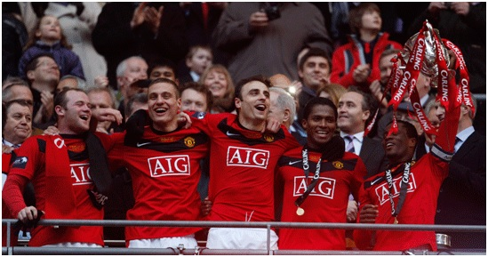
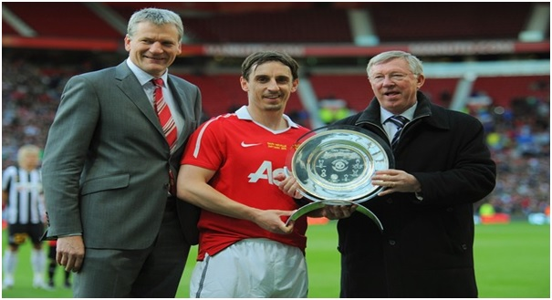

Chương 40

a lần liên tiếp VĐQG, hai lần liên tiếp vào chung kết Champions League, còn điểm đến nào lý tưởng hơn Manchester United? Vậy mà hè 2009, chẳng có ngôi sao nào cập bến Old Trafford; ngược lại, Sir Alex còn để mất hai cầu thủ xuất sắc. Ronaldo sang Real Madrid, và Carlos Tevez sang Manchester City. Tevez không chịu ở lại, vì bất mãn chuyện bị Berbatov tranh mất chỗ, cũng vì United dùng dằng mãi, không chịu trả cái giá 25 triệu bảng để mua đứt anh, trong khi Chelsea sẵn sàng trả 35, và City 47 triệu! Thời điểm Ronaldo và Tevez ra đi, cục nợ của United đã lên đến 700 triệu bảng. Mùa trước, đội thu lời 72 triệu, thì nhà Glazer dùng tới 69 triệu để trả lãi suất. Chẳng lạ gì khi các trụ cột không được giữ chân.
Giữa lúc City chi ra 120 triệu để tiếp tục tăng cường lực lượng, United bỏ túi 80 triệu từ vụ Ronaldo, song không thấy hoạt động tích cực trên thị trường chuyển nhượng. Dường như các ông chủ Glazer đã có tính toán: 80 triệu là vừa đủ bù vào số tiền mua Nani, Anderson, Hargreaves mùa 07-08 và Berbatov mùa 08-09, chứ có lời gì đâu! Để thay thế Ronaldo và Tevez, Ferguson chỉ đem về được ba cầu thủ không mấy tên tuổi: Antonia Valencia, Gabriel Obertan, và Mame Biram Diouf, với tổng giá khoảng 22 triệu.
80 - 22 = 58!Những nguồn tin chính thống từ Old Trafford đều khẳng định Ferguson có toàn quyền sử dụng 80 triệu. Theo đó, 58 triệu còn lại, Fergie không xài là do…không muốn. Điều này hết sức khó tin. Sir Alex, người từng luôn phàn nàn vì Martin Edwards ky bo mà ông không mua được các siêu sao như Ronaldo (Brazil) hay Batistuta, người mà sau những vụ chuyển nhượng Veron và Ferdinand từng hồ hởi tuyên bố chi tiêu như thế mới đáng mặt United, lại chê tiền hay sao? Có tiền không thèm xài, đó là Wenger, không phải Ferguson.
Của đáng tội, ngoài ba anh vô danh, đến với Old Trafford cũng có một tên tuổi lừng lẫy, nguyên là Quả Bóng Vàng Châu Âu: Michael Owen. Tiếc rằng Owen tới United trễ…10 năm. Ở thời điểm 2009, cựu thần đồng nước Anh đang sống kiếp “đời thừa”, ngay cả một CLB Hạng Nhất như Newcastle cũng không gia hạn hợp đồng với anh. Do vậy, Ferguson có được Owen mà không tốn một xu.
Như từng nhận xét nơi các chương trước, thế hệ 07-08 tuy mạnh về phòng ngự, nhưng trên hai tuyến tiền vệ và tiền đạo thì rất mất cân bằng, phụ thuộc rất nhiều vào Ronaldo. Nay không còn Ronaldo và Tevez, Berbatov thì đá phập phù, cả hai tuyến ấy chỉ còn một ngôi sao độc nhất là Wayne Rooney. Trách nhiệm từ giờ đổ hết lên vai Rooney.
Rooney vốn nổi tiếng sớm hơn Ronaldo. Khi Rooney hai lần được vinh danh Cầu Thủ Trẻ Xuất Sắc Nhất Nước Anh, Ronaldo còn chưa có danh hiệu gì. Đến khi cầu thủ người Bồ bừng sáng, Rooney phần nào bị che lấp. Trong hai mùa gần nhất, nhiều khi anh phải lùi xuống chơi tiền vệ, hoặc đá dạt ra cánh, nhường vị trí ghi bàn cho Ronaldo hay Tevez. Người khác có thể lấy đó làm khó chịu, riêng Rooney không phàn nàn. Đối với anh, chuyện bản thân ghi bàn hay không chẳng quan trọng, mà quan trọng là chiến thắng của đội nhà. HLV chỉ đạo gì, giao cho nhiệm vụ gì, không khi nào anh thoái thác. Thậm chí có lần Rooney còn “gợi ý” cho Ferguson: “Con chơi trung vệ cũng được đấy. Hồi đá banh ở trường, con từng chơi trung vệ.” Đánh giá về Rooney, Fergie luôn ngợi khen “Cậu ấy không ích kỷ mà sẵn sàng hy sinh vì tập thể. Tinh thần vì tập thể, vì đồng đội của cậu ấy là trên cả tuyệt vời.”
Không còn phải hy sinh vì ai, Rooney được giao vị trí mũi nhọn trong mùa 2009-2010. Từ đây, anh đường hoàng bước ra khỏi cái bóng của Cristiano Ronaldo. Có cảm giác Rooney gồng mình lên để lấp chỗ trống do người đồng đội lớn để lại, cống hiến hơn cả 100% sức lực. Anh ghi bàn từ mọi tình huống, thậm chí thường xuyên lập công từ đánh đầu, điều trước đây ít khi làm được. Hai bàn vào lưới Wigan, ba bàn trước Portsmouth, bốn trái phá lưới Hull, rồi hai trái tặng West Ham, Rooney lập công còn nhiều hơn cả Ronaldo mùa trước. Anh chính là người mở tỷ số trận derby lượt đi đầy kịch tính với Manchester City. Trận đấu kết thúc với kết quả 4-3, bàn quyết định do Owen ghi ở phút…96. Lượt về, tuy Rooney không lập công, United vẫn ghi bàn vào phút bù giờ (Scholes phút 93), khiến City một lần nữa ôm đầu khóc hận.
Phong độ Rooney lên đến đỉnh cao trong hai trận vòng hai Cúp C1 trước CLB bảy lần vô địch châu Âu AC Milan. Dưới thời Sir Alex, Milan từng hai lần loại United; lần này tới lượt Quỷ Đỏ phục thù. Rooney lập cú đúp, Scholes ghi một bàn, giúp đội khách thắng 3-2 ngay tại “thánh địa” San Siro. Trận lượt về diễn ra hoàn toàn ngược chiều, một cú đúp nữa của Rooney làm Milan rệu rã, mất hết tinh thần, tạo cơ hội cho Park Ji Sung và Fletcher phá lưới thêm hai lần, ấn định tổng tỷ số 7-2.
Khi đội bóng quá phụ thuộc vào một người, không khỏi lo lắng chuyện gì sẽ xảy ra nếu người đó nghỉ dài hạn. Không Ronaldo còn Rooney, không Rooney thì chẳng còn ai nữa. Điều người hâm mộ e ngại rốt cuộc cũng đến. Rooney ghi bàn từ rất sớm trong trận tứ kết lượt đi với Bayern Munich, nhưng bị chấn thương về cuối trận, và đội bóng Đức thắng ngược 2-1. Chưa lành lặn hẳn, anh vẫn phải ra sân do tính chất quá quan trọng của lượt về. Diễn biến thuận lợi cho United trong hiệp một, khi đội dẫn 3-1. Sang hiệp hai, gió bỗng đổi chiều: Hậu vệ trẻ Rafael lãnh thẻ đỏ, rồi Rooney tái phát chấn thương, buộc phải nghỉ sớm. Bayern dồn lên áp đảo toàn diện, ghi được bàn thắng quý như vàng rút ngắn khoảng cách còn 2-3, đoạt quyền đi tiếp bằng luật bàn thắng sân khách.
Dù chấn thương vào giai đoạn cuối, Rooney kịp lập công 34 lần trên các mặt trận (đứng thứ nhì là Berbatov, chỉ có 12 bàn), xứng đáng giành giải Cầu Thủ Xuất Sắc Nhất Nước Anh (PFA và FWA). Tuy vậy, nhân lúc anh phải ngồi ngoài, Chelsea “tranh thủ” hạ United 2-1. Chiến thắng này mang tính quyết định; nhờ nó, đoàn quân xanh đăng quang ngôi vô địch với một điểm nhiều hơn Quỷ Đỏ. Mùa đó, danh hiệu duy nhất Sir Alex giành được là Cúp Liên Đoàn: Owen và Rooney là tác giả hai bàn thắng, giúp United thắng Aston Villa 2-1 trong trận chung kết.

Từ trái sang: Rooney, Vidic, Berbatov, Valencia và Evra ăn mừng Cúp Liên Đoàn 2010 (Ảnh: Ladbrokes.com)
Mùa 2010-2011, United tiếp tục tiêu tiền kiểu nhà nghèo, chi 26 triệu bảng sắm tổng cộng bốn cầu thủ, trong đó nổi bật nhất là tiền đạo 22 tuổi người Mexico Javier Hernandez, biệt danh Chicharito (hạt đậu nhỏ). Ferguson rất kỳ công, gửi hẳn một tuyển trạch viên sang Mexico ăn dầm nằm dề suốt một tháng để theo dõi Hernandez, sau đó mới quyết định mua. Hernandez yêu gia đình, không muốn ra nước ngoài, nhưng cơ hội tới Old Trafford không thể bỏ qua nên đành dứt áo. Giá chuyển nhượng 6 triệu là khá hời, bởi ngay mùa đầu tiên, “Đậu” đã gây ấn tượng tại CLB mới. Tuy chưa đủ sức đá chính, mỗi khi ra sân, anh rất có duyên ghi bàn, được coi là một Solskjaer đệ nhị.
Hai gã nhà giàu Chelsea và Manchester City đương nhiên tiếp tục đốt tiền tậu sao: đội trước chi 102 triệu, đội sau 143. City thậm chí còn kiếm cách dụ dỗ Rooney, khiến anh xiêu lòng. Giữa tháng 8, 2010, Rooney thông báo với United anh sẽ không tái ký hợp đồng, lấy lý do CLB không có đủ tham vọng. Hiểu rõ học trò chỉ nhất thời nông nổi, và chẳng qua chỉ muốn được tăng lương, Sir Alex không dùng “máy sấy”, mà nhẹ nhàng, chân tình khuyên bảo Rooney. “Con bảo đội bóng không tham vọng à?”, Sir nói, “Thế 20 năm qua, có năm nào chúng ta không cạnh tranh chức VĐQG? Mấy năm gần đây, chúng ta vào chung kết Champions League bao nhiêu lần?...Con à, đôi khi ta nhìn sang cánh đồng bên cạnh thấy bò của người, có càm giác như bò người luôn tốt hơn bò nhà, thật ra có phải vậy đâu. Cũng như nhau thôi, có khi bò nhà lại còn tốt hơn ấy chứ”. Bên cạnh lời nói, để Rooney có thời gian suy nghĩ, Ferguson gửi anh đi “tĩnh tâm” ở trại tập huấn của Nike ở Oregon, Hoa Kỳ, đồng thời không quên can thiệp để học trò được hưởng mức lương ngất ngưởng 250000 bảng/tuần.
Sau buổi gặp Fergie, Rooney ra thông cáo báo chí, nhấn mạnh: “Bất chấp những khó khăn gần đây, tôi biết mình luôn mang nợ ngài Alex Ferguson. Thầy là một HLV lớn, một người thầy luôn giúp đỡ và ủng hộ tôi từ ngày tôi 18 tuổi, mới từ Everton sang. Vì Manchester United, tôi mong thầy không bao giờ về hưu, vì thầy là thiên tài, trên đời chỉ có một.” Ký xong hợp đồng mới, với mức lương tăng cao, anh hồ hởi thừa nhận việc đòi ra đi là “sai lầm lớn nhất trong đời tôi”!
Dẫu chấp nhận ở lại, Rooney không đạt được phong độ tốt nhất. Có vẻ như sau một mùa gồng mình, gánh cả đội trên lưng, anh đã xuống sức. Cũng dễ hiểu: Người ta chỉ có thể lên đồng, cống hiến hơn 100% sức lực trong một thời gian, chứ muốn vĩnh viễn là bất khả. Dấu ấn Rooney ở mùa bóng mới không mấy đậm nét, ngoại trừ cú tung người móc bóng đẹp đến mê hồn trong trận thắng Manchester City 2-1. Pha lập công này được bầu là bàn thắng đẹp nhất trong lịch sử giải Ngoại Hạng Anh.
Khi ngôi sao duy nhất trên hàng công không tỏa sáng như trước, liệu có thể hy vọng gì? Câu trả lời là có, bởi trên băng ghế huấn luyện, vẫn còn đó vị thuyền trưởng vĩ đại Alex Ferguson. Sir Alex có thể thích nghi với mọi tình huống: Ngày xưa là đại gia thống trị Ngoại Hạng, ông hành xử theo kiểu nhà giàu; giờ đây bỗng hóa ra nghèo, không cạnh tranh nổi về tài chính với các phú ông mới nổi, thì ông “liệu cơm gắp mắm”.Từ lâuFerguson đã hay xoay tua đội hình, nhưng nay, ông đẩy mạnh tốc độ và cường độ vòng xoay, đưa việc xoay tua trở thành trọng tâm chiến thuật trong cuộc đua giành danh hiệu.
Tại sao ông làm như thế? Nên biết đội hình United, ngoài Rooney và những trụ cột hàng thủ như Van der Sar, Vidic, Ferdinand, đa phần còn lại có thể xếp vào ba nhóm: tài năng trẻ chưa đạt độ chín (Hernandez, Rafael, Anderson…), lão tướng sức đã yếu (Scholes, Giggs, Owen…), và cầu thủ có năng lực, nhưng luôn phập phù (Berbatov, Nani, Carrick…). Cả ba nhóm chia sẻ một đặc điểm chung: Phong độ không ổn định, có lúc rất thăng hoa, khi khác lại nhạt nhòa. Nếu biết xoay tua hợp lý, nắm rõ thời điểm nào cần dùng ai, bỏ ai, mới có thể phát huy hết tiềm lực đội bóng.
Vấn đề là phải làm cách nào? Chẳng hạn như, làm sao biết trước trận nào Berbatov sẽ thăng, trận nào sẽ xìu? Chả có quy luật nào cả. Đánh giá bằng phong độ trên sân tập cũng không được, vì đá tập và đá thật hoàn toàn khác. Cách duy nhất là dựa vào dự cảm và con mắt tinh đời của HLV. Giống như một bậc trưởng lão già đời có thể nhìn vào mắt người mà đoán biết tính cách, một HLV lão luyện và giàu kinh nghiệm như Sir Alex có thể dự cảm được điểm rơi phong độ của các học trò. Vai trò của Sir ở Old Trafford vốn đã quan trọng, nay càng trở nên thiết yếu. Đội hình United rõ ràng đã yếu hơn hẳn; hoàn toàn chỉ nhờ sự xoay sở của ông mới có thể cạnh tranh với các đại gia ở quốc nội và châu lục.
Nửa đầu mùa giải, Sir Alex đặt niềm tin vào Dimitar Berbatov. Chân sút người Bulgaria mang vẻ ngoài rất công tử, luôn luôn chải chuốt, láng mượt; lối chơi cũng “quý tộc” như ngoại hình: Tuy khéo léo, tinh tế, và rất giàu kỹ thuật, nhưng khề khà, chậm rãi, lười di chuyển, không thích hợp với những trận cầu tốc độ nhanh. “Công tử” tại những CLB nhỏ như Bayer Leverkusen hay Tottenham thì được, chứ ở Old Trafford là không xong; nên suốt hai năm đầu khoác áo Quỷ Đỏ, Berbatov không thể hiện được mấy. Tuy thế, giai đoạn thăng hoa của Berbatov bắt đầu vào ngày 19 tháng 9, 2010, khi anh lập hattrick, đem về chiến thắng 3-2 trước Liverpool. Trong ba bàn, bàn thứ hai là một tuyệt tác nghệ thuật, làm gợi nhớ đến bậc thầy kỹ thuật Rivaldo ngày xưa: Đứng quay lưng lại khung thành, Berbatov đỡ bóng bằng đùi, rồi ngả người tung sút vô cùng ngoạn mục.
Từ đó, Berbatov tiếp tục “nhập đồng”, chạm đâu biến đấy thành vàng, ghi năm bàn giúp United thắng Blackburn 7-1, rồi một hattrick nữa giúp đội hạ Birmingham 5-0. Ngày 25 tháng 1, 2011, sau hai trái vào lưới Blackpool thì “thánh xuất”. Sir Alex không lo lắng, bởi đó cũng là lúc tân binh Javier Hernandez đang lên đỉnh. Ông cất Berbatov vào ghế dự bị, sử dụng “hạt đậu nhỏ” trên hàng công. Được coi là Solskjaer mới, thực chất Hernandez giống với Filippo Inzaghi nhiều hơn. Chẳng có kỹ năng gì nổi trội, song anh là chuyên gia “ăn cắp trứng gà”, cực kỳ thính nhạy với cơ hội. Chicharito ghi một bàn trong trận cầu mang tính quyết định của mùa giải, góp phần đưa United vượt qua Chelsea với tỷ số 2-1. Thắng trận này, Quỷ Đỏ chỉ cần hòa ở vòng áp chót với Blackburn để lên ngôi vô địch, một nhiệm vụ họ hoàn thành chẳng mấy khó khăn.
Cúp C1 cũng chứng kiến sự tỏa sáng của Hernandez. Anh lập cú đúp vào gôn Marseille ở lượt về vòng hai, và phá lưới Chelsea ở lượt về tứ kết. Tại bán kết, Quỷ Đỏ gây giông tố, cuốn trôi Schalke 04. Trên đất Đức, trước sự xuất thần của thủ thành Manuel Neuer, đội bỏ lỡ bảy tám cơ hội mười mươi, nhưng vẫn vượt qua đối thủ nhờ công Rooney và lão tướng Ryan Giggs. Về Old Trafford, đến Neuer cũng bị khuất phục: Valencia, Gibson và Anderson (hai bàn) lập công, giúp chủ nhà thắng nhàn 4-1.
Trận chung kết với Barcelona, tuy nhiên, là một thử thách quá lớn. Hai năm trước, với Ronaldo trong đội hình, United còn thúc thủ trước Barca. Giờ đây, Ronaldo không còn nữa, trong khi Barca đã mạnh càng thêm mạnh với sự bổ sung các ngôi sao như Javier Mascherano và David Villa. Không bất ngờ khi Barcelona chiếm tới 68% quyền kiểm soát bóng, và sút 22 cú so với 4 bên United. Sau bàn mở tỷ số của Pedro, United cố gượng đứng lên với pha gỡ hòa của Rooney, song đến phút 54, lúc “hoàng tử bé” Messi tung sút tái lập cách biệt, mọi hy vọng hoàn toàn tan vỡ. Villa bồi thêm nhát kiếm cuối cùng vào tim quỷ, ấn định chiến thắng 3-1 thuyết phục.
Người hâm mộ Quỷ Đỏ không mấy buồn, vì thất bại là điều đã được dự báo trước. Ngược lại, họ cảm thấy tự hào: Với lực lượng như hiện tại, huy chương bạc đã là kỳ tích. Dù phàn nàn cầu thủ chơi dưới sức mình, Ferguson phải thừa nhận không sao kèm nổi Messi. Ông đánh giá Barcelona là đội bóng vĩ đại, ngang tầm với Real Madrid những năm 1950, và AC Milan hồi cuối thập niên 1980, đầu 90. Thua một đội như thế không có gì đáng xấu hổ.
Chỉ tỏa sáng khoảng nửa mùa, Dimitar Berbatov vẫn giành ngôi Vua Phá Lưới giải Ngoại Hạng, ngang với Carlos Tevez của Manchester City. Javier Hernandez ngay mùa đầu trong màu áo CLB mới cũng ghi đến 20 bàn thắng tại các giải, chỉ kém một so với Berbatov. Song le, người đáng tôn vinh nhất là Sir Alex Ferguson. 2010-2011 chính là mùa bóng mà tài cầm quân của Ferguson được thể hiện rõ rệt nhất. Không sở hữu lực lượng đồng đều như mùa 98-99, không có Ronaldo như mùa 07-08, United 10-11, nói thẳng ra, là một đội hình “què quặt”. Vậy mà dưới sự chèo chống, xoay sở của vị HLV lão làng, CLB đã đấu tranh kiên cường, vượt qua hai núi tiền: một Nga, một Ả Rập, để vào tận chung kết Cúp C1, và giành thắng lợi cuối cùng ở giải Ngoại Hạng, bỏ xa Chelsea và Manchester City tới 9 điểm, trở thành đội đầu tiên 19 lần VĐQG Anh, phá kỷ lục 18 lần của Liverpool. Thế là, như chính lời của Ferguson, ông đã thành công trong việc “đá cho Liverpool bay mẹ nó khỏi đỉnh cao”! Năm 1986, lúc Fergie mới tới Old Trafford, số lần vô địch của Liverpool là 16, so với 7 của United; không ai ngờ ông có thể lập nổi kỳ tích.
Lực lượng đã yếu, cuối mùa, United lạinhận thêm tổn thất khi phải chia tay với thủ môn Edwin Van der Sar. “Người nhện Hà Lan” quyết định treo giày ở tuổi 41, sau sáu năm rực rỡ trong màu áo đỏ. Hai “cận vệ già” Gary Neville và Paul Scholes cũng nói lời giã từ. Ngày 24 tháng 5, 2011, Sir Alex mời David Beckham, Nicky Butt và Phil Neville trở lại Old Trafford, tái lập đội hình trẻ 1992, đá giao hữu cùng Juventus trong trận cầu tôn vinh Gary Neville. Trận tôn vinh Paul Scholes diễn ra vào ngày 5 tháng 8; United thắng New York Cosmos 6-0. Bàn mở tỷ số do chính Scholes ghi từ một pha sút xa sở trường.

Sir Alex trao khánh bạc lưu niệm cho Gary Neville trước trận cầu tôn vinh anh. Bên trái là David Gill (Ảnh: Manutd24.com)